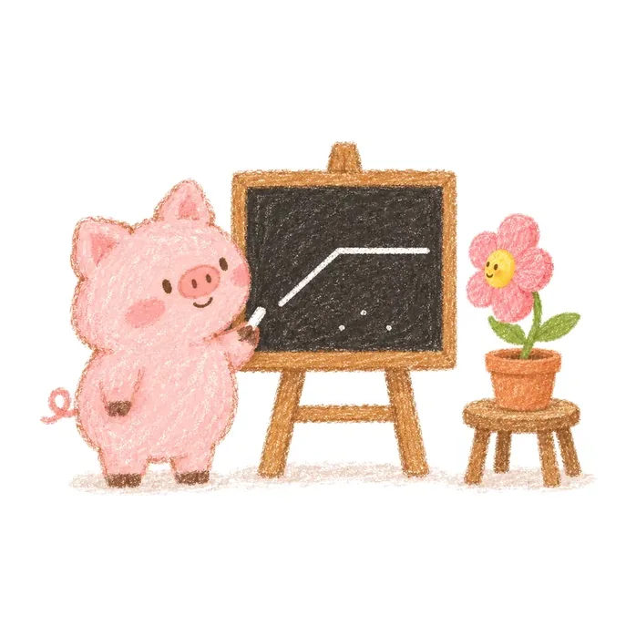

Yihua Liu。这里记两件事：每周拆开一样 AI infra 里的东西；从 roofline 出发，一个模型一个模型地找算力的边儿。偶尔也写数学。

Infra Weekly
每周拆开 AI infra 里的一样东西。
看全部 →
Roofline, model by model
先算出上界，再一只一只地量。
笔记列表需要 JavaScript。也可以直接打开 posts/ 里的 Markdown。
posts/